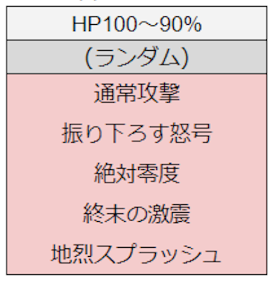

絶念のアウルモッド
強さ2 行動表へジャンプ
- あくま系
- 強さ1:全属性等倍
- 強さ2:全属性0.9倍 魔剣もいける.
- 構成
- 僧侶: ※聖女の守りするゲーム.死ぬほど忙しいです.
- レンジャー
- 物理アタッカー (バト,魔剣,武闘家,踊り)
- 各職行動
- 僧侶
- 怒号(1215くらいくらう)これから味方を守るのが仕事.
- ファランクスで確定耐えするためにHP891が必要(強さ2)
- 常に聖女を撒き続ける.かなり忙しい.
- 女神はバトにかけるとバトが脳筋暴走してくれる.
- ベホマラーとベホイムをつかい分ける.怒号を聖女でひとり受けしてくれたらベホイムで済む.ジャッジや分散の時,前衛にどう動いて欲しいか話しておくといい.
- レンジャー
- 基本ツメ,レボル行けそうな時はブメ
- 霧を絶対に維持する.僧侶ブレス無効化なら前衛だけにかければいい.
- タイガクローするのは僧侶タゲ下がり中くらい.無闇に前にいかない.引っ張れないと前3人にバンバン怒号打たれるから..
- サマソ,ケルベロスは基本CT溜まるたびにうつ.くずれたときは臨機応変に,一番大きいリターンを狙う.
- 必殺アヌビスひいたら叫ぼう!適当に1人で使っても何も意味ない.結構避難することとか石割りとか多くて火力稼げないから,シナジー爆発を狙おう.
- 前衛
- 壁に入ることが最優先.
- 壁に入らずに好き放題殴ってたらベホマラーが届かない.だから敵の前にいた方が生存率も高くなる.びびらずにがんばろう.
- 武闘家が一番初心者向け.SHTで怒号を耐えれる.魔剣もヴェールがあれば怒号を耐える.(強さ2HP921)
- バトマスが最強なので,ジャッジとかの時はバトマス以外が離れてあげよう.
- 踊り子はララバイがめちゃつよい.戦鬼の乱れはバトはテンションバーン,武闘家は牙神昇誕があるので優先度は低い.
- 必要装備
- HP 891以上
- ロザリオ,ラストチョーカー
- 毒,転び,ブレスはきりで対策する.
- 終末の激震→自身の周囲範囲に大ダメージ+ふっとび+転び,結構やってくる.ツッコミで避けよう.
- 振り下ろす怒号→対象周囲に 1200くらいのダメージ.聖女の守りかぼうぎょで耐える.
- 絶対零度→対象+前方扇状に1637～1663の氷属性ブレスダメージ+おびえ
- 地烈スプラッシュ→よくある前方直線即死攻撃.
- 運命の円陣→紅と紫の円陣を設置し,一定時間後に9999ダメージ+蘇生禁止（15秒）2回攻撃なので耐えれない.蘇生禁止の効果は死者に対しても付与される.自分と同じ色の陣に乗っていれば回避可能.
- 分散する災禍→対象周囲に1800程度のダメージ.受ける人数で総ダメージを割る.2人でも900とかくらうので,2人ならひとり聖女で受けた方がいい.アウルモッドの分散は特別で単発なので.
- ジャッジメントフレア→4人を対象とした円形周囲に360～410の無属性ダメージ 2回.複数人分の攻撃範囲内に入っている者にはその分だけ命中する.つまり死ぬので絶対4人離れよう.
- ダークネスブレス→対象+前方扇状範囲に1487～1513程度の闇属性ブレスダメージ+幻惑+呪い+全属性耐性低下（100%低下）
- はげしいおたけび→前方扇状範囲に最大HPの85～95%程度のダメージ+ふっとび.後ろに回り込めばよけれる.
- 運命の魔結晶→紅と紫の魔結晶を召喚する
-
紅の魔結晶,紫の魔結晶
【リミットバースト】:紅の魔結晶が召喚されてから一定時間後に使用.全体に有利な状態変化解除+与ダメージ減少（15秒間50%低下,解除不可,死亡後も効果が持続）-
【ダメージボーナス】:紅の魔結晶がリミットバーストを使う前に一定ダメージを与えると使用.プレイヤー側全体に与ダメージ増加（10秒間50%上昇
- 死毒の旋風→対象周囲に920～960程度のダメージ+猛毒（90ダメージ）
- 双紅の血陣→陣をフィールド中央に3つ,外周に3つの計6つ設置.中央3つ→外周3つの順に起爆し,陣上のキャラクターに9999ダメージ 2回.時間差で床が光るので中央から離れておこう.
- 終わりなき運命の円舞→一定間隔で運命の円陣が発生するようになる
- 絶念の叫び→自身周囲に有利な状態変化解除+守備力ゼロ+移動速度低下+全属性耐性低下+ふっとびを与え,自身にかかっている不利な状態変化をすべて解除したうえで,テンションアップ1段階.誰かが被弾した場合はさらに攻撃時HP回復と行動間隔短縮2段階を自身に付与する.いや,最強技すぎる...
強さ1
行動
・100%~90% AI2
- 円陣→分散orジャッジ→ブレス→打撃→零度
・90%~80% AI2
- 円陣→分散orジャッジ→ブレス→打撃→零度
・80%~50% AI2
- 結晶→怒号→零度→分散orジャッジ
・50% AI2
- 円舞→分散orジャッジ→怒号→零度
・25%~0% AI2
- ブレス→分散orジャッジ→分散
強さ2
行動
・100%~90% AI2
・90%~75% AI2
- 円陣→分散orジャッジ→ブレス→怒号→ブレス
- レンジャーは結晶破壊のためにライガー,ゴッドスマッシュは温存しておく.
・75%~50% AI2
- 結晶→怒号→零度→分散orジャッジ
- A→Bの連続ジャッジに注意.
・50%~25% AI2
終わりなき運命の円舞→ブレス→怒号or地烈
- 分散→ブレス→怒号
・25%~0% AI2
- ブレス→ジャッジ→分散